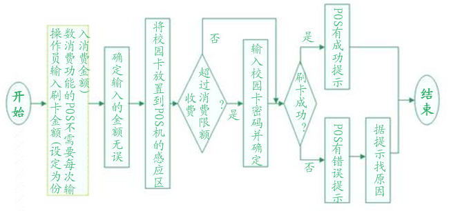
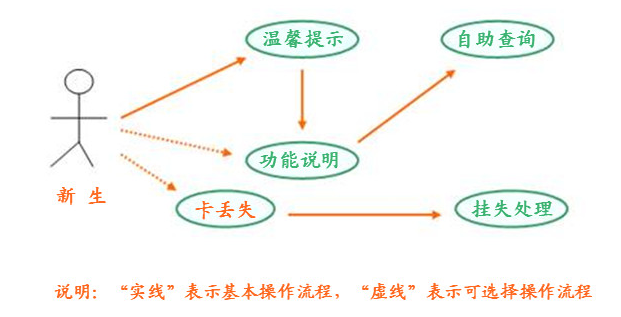

欢迎您进入功能说明界面
只有认真阅读功能说明的每一个模块内容，您才能进行正常的相关操作，
功能说明主要包括校园卡一卡通的基本功能介绍和本网站操作的一些介绍。
其中校园卡的主要职能有：办卡、圈存、消费、查询、挂失、解挂以及补卡
等；本网站的基本操作主要有：基本操作流程、自助查询介绍以及挂失处理
等操作。
办 卡 说 明 界 面
用户领卡时需出示本人校内有效身份证件，并在相关登记册（簿）上签字。学
生集中办卡时以院为单位集体领取，由各院经办人持院证明办理，并在相关登记册
(簿)上签字；职工集中办卡时以部门为单位集体领取，由各部门经办人持单位证明
办理，并在相关登记册（簿）上签字。
温馨提示：
1、校园卡默认查询密码和消费密码均为“000000”，银行卡/折默认密码请看银行 的密码信封。 2、领到新卡后，请您马上修改初始密码。银行卡密码可到校内自助银行或附近的 ATM机上修改；校园卡密码请到校内圈存机或一卡通管理办公室修改。为安全起 见，密码请勿使用出生年月日，电话号码，学号等易被他人猜测到的数字。 3、校内有效身份证件为学生证、工作证或学校正式建制的单位证明。密 码 说 明 界 面
为加强校园卡安全，学校在校园卡上设定了“两密一限”的安全保护措施。所谓
“两密”指的是消费密码和查询密码，初始值均为“000000”，消费密码用来保护校
园卡的电子钱包，查询密码用于查询时验证身份。所谓“一限”指的是日消费限额，
为了降低卡遗失后持卡人的经济损失，学校规定校园卡的 卡内资金上限为300元，下
限为10元 。即每次做圈存转账时，校园卡的卡内余额最高不能超过300元，最低圈存
金额为10元。同时，系统默认的日消费限额由系统设置为20元，即每卡每日正常消费
允许20元，超过20元时，请在消费POS机上输入您的消费密码，即可继续消费。
温馨提示：
1、日消费限额可以根据用户自己的消费情况，到圈存机上使用“修改校园卡限额” 功能进行修改。 2、用户如果在消费 POS 机超限额消费，必须修改初始密码“000000”。圈 存 说 明 界 面
圈存机不仅具有充值功能，还可修改密码、修改消费限额、挂失、解挂、查询
余额、查询其它相关信息等操作。操作时，请严格按屏幕提示插卡。圈存机提示刷
卡时，请在圈存机右侧的刷卡槽刷牡丹灵通卡或存折。
4、校园卡挂失 5、修改校园卡密码 6、修改校园卡限额
“银行卡折余额”提供查询银行卡折（工行银行卡折）余额的功能。操作 流程如下（请按屏幕提示操作）： 按提示刷银行卡折→输入银行卡折密码（确定）→等待联机处下完成…→ 查看处理返回信息→完成
2、校园卡余额
“校园卡余额”提供查询校园卡余额的功能。操作流程如下（请按屏幕提 示操作）：按提示插入校园卡（确定）→查看屏幕信息→取出校园卡→完成
3、圈存
“圈存”操作完成从银行卡折（工行银行卡折）到校园卡的转帐功能。操 作流程如下（请按屏幕提示操作）： 按提示插入校园卡（确定）→刷银行卡折→输入 6 位数的银行卡折密码( 确定)→输入要圈存的金额(确定)→等待联机处理完成…→查看处理返回信息 →取出校园卡→完成
4、校园卡挂失
“校园卡挂失”操作完成校园卡的自助挂失。操作流程如下（请按屏幕提 示操作）： 输入本人校园卡账号（确定）→输入校园卡账户密码(6 位数字 , 确定) →等待联机处理完成…→查看处理结果信息→完成
5、修改校园卡密码
“修改校园卡密码”提供修改校园卡密码的功能。操作流程如下（请按屏 幕提示操作）： 按提示插入校园卡（确定）→输入校园卡原密码(6 位数字 , 确定)→输 入新密码（ 6 位数字，确定）→再次输入新密码（ 6 位数字 , 确定）→等 待联机处理完成…→查看处理返回信息→取出校园卡→完成
6、修改校园卡限额
“修改校园卡限额”提供自助修改校园卡限额的功能。操作流程如下（请 按屏幕提示操作）： 按提示插入校园卡→输入校园卡密码（ 6 位数字 , 确定）→输入新限额 (确定)→等待联机处理完成…→查看处理返回信息→取出校园卡→完成
2、输入银行卡或校园卡密码时要注意保密，防止其他人看到自己的密码。
3、每次操作完成后记住拿走自己的卡（银行卡和校园卡），不要遗失。
4、如果在圈存过程中发生金额不符等情况时，请及时与学校一卡通管理办公 室联系解决。
功能选择(根据需要按数字键1-6选择交易):
1、银行卡折余额 2、校园卡余额 3、圈 存4、校园卡挂失 5、修改校园卡密码 6、修改校园卡限额
功能说明与操作流程:
1、银行卡折余额“银行卡折余额”提供查询银行卡折（工行银行卡折）余额的功能。操作 流程如下（请按屏幕提示操作）： 按提示刷银行卡折→输入银行卡折密码（确定）→等待联机处下完成…→ 查看处理返回信息→完成
2、校园卡余额
“校园卡余额”提供查询校园卡余额的功能。操作流程如下（请按屏幕提 示操作）：按提示插入校园卡（确定）→查看屏幕信息→取出校园卡→完成
3、圈存
“圈存”操作完成从银行卡折（工行银行卡折）到校园卡的转帐功能。操 作流程如下（请按屏幕提示操作）： 按提示插入校园卡（确定）→刷银行卡折→输入 6 位数的银行卡折密码( 确定)→输入要圈存的金额(确定)→等待联机处理完成…→查看处理返回信息 →取出校园卡→完成
4、校园卡挂失
“校园卡挂失”操作完成校园卡的自助挂失。操作流程如下（请按屏幕提 示操作）： 输入本人校园卡账号（确定）→输入校园卡账户密码(6 位数字 , 确定) →等待联机处理完成…→查看处理结果信息→完成
5、修改校园卡密码
“修改校园卡密码”提供修改校园卡密码的功能。操作流程如下（请按屏 幕提示操作）： 按提示插入校园卡（确定）→输入校园卡原密码(6 位数字 , 确定)→输 入新密码（ 6 位数字，确定）→再次输入新密码（ 6 位数字 , 确定）→等 待联机处理完成…→查看处理返回信息→取出校园卡→完成
6、修改校园卡限额
“修改校园卡限额”提供自助修改校园卡限额的功能。操作流程如下（请 按屏幕提示操作）： 按提示插入校园卡→输入校园卡密码（ 6 位数字 , 确定）→输入新限额 (确定)→等待联机处理完成…→查看处理返回信息→取出校园卡→完成
注意事项:
1、操作时请按屏幕提示插卡和输入信息，不要随意操作，以防损坏您的卡片 给你带来不便。2、输入银行卡或校园卡密码时要注意保密，防止其他人看到自己的密码。
3、每次操作完成后记住拿走自己的卡（银行卡和校园卡），不要遗失。
4、如果在圈存过程中发生金额不符等情况时，请及时与学校一卡通管理办公 室联系解决。
消 费 说 明 界 面
一.消费
消费是指持卡人使用校园卡在校内消费后（食堂就餐、超市购物等），通过P OS 机刷卡方式进行的支付结算（即付款）。在操作人员输入刷卡金额并确定后， 持卡人将校园卡放置在 POS 机感应区内， POS 机发出一声鸣叫后表示刷卡成功 ，此时可将校园卡收回，完成一次刷卡结算。二 .身份认证
身份认证是指持卡人使用校园卡在图书馆借书、还书、考试等需要进行认证 的场合时，系统通过读卡器对持卡人进行的身份认定。在操作人员提示刷卡后， 持卡人将校园卡放置在读卡器感应区内，读卡器发出一声鸣叫后表示认证成功， 此时可将校园卡收回，完成一次刷卡认证。三.持卡人POS机刷卡支付操作流程
自 助 服 务 说 明 界 面
一.自助服务种类
校园卡自助服务是由圈存机和校园一卡通网站提供的。用户可以通过使用圈存 机或登陆校园一卡通网站，完成修改密码、修改消费限额、挂失、查询余额、转账 、查询其他相关信息等业务。有关操作请参考圈存机操作指南和一卡通网站的相关 提示说明进行二.校园卡充值
校园卡充值由分布于校园内的圈存机自助完成。圈存是指通过分布在学校各处 的圈存机，自助完成将银行卡/折资金转账到校园卡的操作。为保证金融安全，维 护持卡人的利益，规定 每次转帐的下限为10元人民币，上限为300元人民币。同时 ，校园卡转帐只能进行单向转帐，即只能将银行卡或活期存折上的金额转到校园卡 上，而不能将校园卡上的金额转到银行卡或活期存折上。圈存时需要同时使用银行 卡/折和校园卡，具体操作流程请参考圈存机操作指南。温馨提示：
1、圈存是金融术语，指将银行卡、折的存款通过专用设备（圈存机）转入校园 卡内的过程。2、由于校园卡的充值业务是由分布于校园内的圈存机自助完成，对于学生卡和 教工卡用户，学校不提供现金充值业务。对于临时卡用户，只提供小额现金充 值服务。
挂 失 说 明 界 面
校园卡不慎丢失，用户应立即申请挂失。用户可登陆校园“一卡通” 网站或
在圈存机上，通过自己的校园卡账号（学生学号或教工编号）自助挂失（请按照相
应的操作说明进行操作）。自助挂失后，用户需到一卡通管理办公室补交书面挂失
申请。用户也可持本人校内有效身份证件到学校一卡通管理办公室申请书面挂失。
提交书面挂失申请时，用户需出示本人校内有效身份证件，并完整填写二联“业务
受理单”，第一联存根，第二联本人持有。 书面挂失申请被受理后，校园卡工作
人员会立即处理，适时挂失，确保用户利益少受损失。由于持卡人的原因造成持卡
人自身经济损失的，由持卡人负责；由于商户的原因造成持卡人经济损失的，由商
户负责。
解 挂 说 明 界 面
挂失的校园卡若被找到，在尚未申请补做新卡之前，用户可以持校内有效身份
证件及校园卡到学校一卡通管理办公室填写“业务受理单”申请解除挂失。
2、申请补办新卡后不能提交对旧卡的解除挂失申请。
温馨提示：
1、请妥善保管好你的校园卡，一旦丢失，应马上挂失。如果是通过圈存机或一 卡通网站挂失的，挂失后，别忘记到学校一卡通管理办公室来补交书面挂失申请。2、申请补办新卡后不能提交对旧卡的解除挂失申请。
补 卡 说 明 界 面
校园卡挂失后，用户可以持校内有效身份证件到学校一卡通管理办公室填写
“业务受理单”申请补办新卡，并交纳补办卡制卡工本费。补办新卡申请受理后，
工作人员应及时按照制卡程序制作新卡。用户持本人校内有效身份证件在申请补办
新卡的二日后（节假日顺延）领取新卡。
若遇校园卡不能正常使用（该卡被称为坏卡），需由学校一卡通管理办公室进 行检测，核定卡片损坏类型。卡片本身质量原因造成卡片损坏的，可以免费换领新 卡；非卡片本身质量原因造成卡片损坏的，用户申请换卡时需交纳制卡工本费。
用户持坏卡及校内有效身份证件到学校一卡通管理办公室填写“业务受理单” 申请换卡。同时，交回坏卡。
2、销户指用户由于毕业、工作调动等原因离开学校而注销校园卡账户。 用户可 以持校内有效身份证件到学校一卡通管理办公室填写“业务受理单”申请销户。 用户于办理销户业务三日后凭校内有效身份证件和销户人员结算单到学校财务处 一卡通结算中心领取卡内余额。
3、用户办理离校手续一个月后，仍未办理校园卡销户手续的，学校一卡通管理办 公室将统一做销户处理，其卡内余额做坏帐处理。
若遇校园卡不能正常使用（该卡被称为坏卡），需由学校一卡通管理办公室进 行检测，核定卡片损坏类型。卡片本身质量原因造成卡片损坏的，可以免费换领新 卡；非卡片本身质量原因造成卡片损坏的，用户申请换卡时需交纳制卡工本费。
用户持坏卡及校内有效身份证件到学校一卡通管理办公室填写“业务受理单” 申请换卡。同时，交回坏卡。
温馨提示：
1、校园卡遗失或损坏后可换卡。校园卡遗失后需先挂失，挂失当天即可申请补卡 ，但是需二日后领卡。 也可二日后办理补换卡，并当场领卡 。2、销户指用户由于毕业、工作调动等原因离开学校而注销校园卡账户。 用户可 以持校内有效身份证件到学校一卡通管理办公室填写“业务受理单”申请销户。 用户于办理销户业务三日后凭校内有效身份证件和销户人员结算单到学校财务处 一卡通结算中心领取卡内余额。
3、用户办理离校手续一个月后，仍未办理校园卡销户手续的，学校一卡通管理办 公室将统一做销户处理，其卡内余额做坏帐处理。
本网站操作的基本流程

自助查询操作说明
自助查询是本网站的核心模块，在本模块中，持卡人可以查询自己某一天的消 费信息以及账户余额，商户可以查询到某一时间段的营业情况，领导可以查询到PO S机的状态、商户综合查询以及门禁查询。其具体的从操作步骤如下： 1.进入本网站的首页，点击下方的自助查询图标，将会进入登陆界面2.在登陆界面中，正确输入“账户”、“密码”以及验证码，点击确定就会进入 查询界面
3.在查询界面中，点击日期文本框，选择要查询的日期后，点击查询 就会得到结果
挂失处理操作说明
挂失处理是本网站的新增功能，持卡人要是无意丢失校园卡，可以及时登录 本网站，在本模块中进行挂失处理，以防捡卡之人对你的账户随时进行消费，也 为了防止别人有意挂失你自己的卡，本网站将对“账户”、“密码 ”、“身份 证号”三项验证，只有此三项信息符合同一个人的才能挂失成功，其具体操作步 骤如下：1.进入本网站首页，点击下方的“挂失处理”图标，就会进入挂失界面
2.在挂失界面中，正确输入“账户”、“密码”以及“身份证号”，点 击“确定”就会进行挂失处理